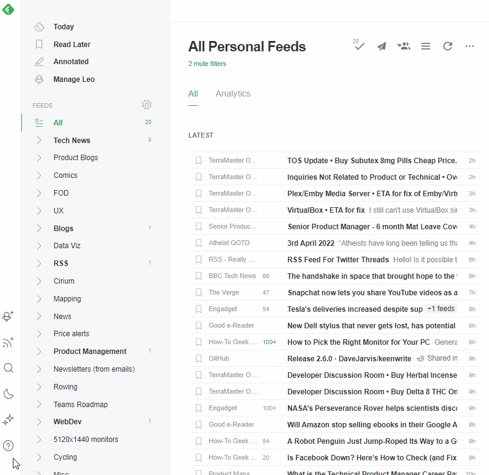

Subscribe to OnlyRSS.org
If you are already familiar with RSS—and you really should be—then simply copy the feed URL below and add it to your RSS aggregator of choice.
To subscribe via Feedly
- Copy the URL from above.
- Open Feedly.
- Navigate to the 'Discover' page.
- Paste the copied URL into the search field.
- Select OnlyRSS from the feed results.
- Select 'follow' and add to a folder.
Show me how: click to
To subscribe via Inoreader
- Copy the URL from above.
- Open Inoreader.
- Select 'Add new' from the left-hand menu.
- Select 'Feed'.
- Paste the copied URL into the search field.
- Select OnlyRSS from the feed results.